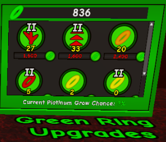
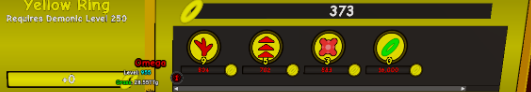

The Tower
Intro
Congratulations on beating World 2! Here you will find a relatively long piece of optional content that you can complete known as The Tower. Before you get into the guide, there is some important information to know below.
You should avoid any of the following actions:
- Performing a reset you just unlocked immediately, for low currency.
- Prioritizing stat upgrades over generator automations.
- Forgetting to purchase Perk Equivalent Upgrades.
Guide Info & Formatting
This guide will use abbreviations, with the first use of them being marked in bold next to the full version i.e. Grasshops (GH). Names of resets and currencies will also be marked in bold for clarity.
Any extremely important information will be marked clearly in bold red text. Each Floor will have its own section, but be sure to ask around for additional help, advice and alternative playstyles.
Floor 1
Estimated Time to GH 10: 1-1.5 Hours Active Playtime
Welcome to the first floor. This is essentially the exact same as the normal realm, but with different upgrades and grasshop milestones. Your goal here, and for every other floor, is to reach Grasshop 10.
Each floor of the tower is the same, but with a different theme and harder stats, which will be explained in the next section. Any time ‘equivalent’ is referenced, it means the same as the feature mentioned, but with a different name.
I will give a brief tutorial on how to get to Grasshop 10 (GHs), and this will be a similar process for all other floors following. The first thing you want to do is save up and go for the autocut. You will then want to progress towards your first Prestige, which should be done for >150k Prestige Points (PPs). Spend these on Grass Autobuyer and then 25 levels into XP and Grass, with the remainder going into Perks. Repeat this process and aim for 25-250M PP for the next Prestige.
You now will be going for Crystallize, aiming for around 500,000 to 1 Million Crystals on the first reset. This lets you afford 3 levels of platinum value, Perk Autobuyer, 50 levels of grass value, and 25 levels in XP and Perks. Once you reach level 200 and can Grasshop, make sure you have all the platinum upgrades you want and do it immediately. Repeat until GH 4.
After getting GH 4, purchase the remaining automation upgrades that cost Crystals, and get as many levels of crystal platinum to farm more platinum upgrades. Once you have done this, progress to GH 8. You should aim for 11-12K steel on the first reset, which can be achieved at level 278 and Crystal Steel Level 11. Spend this steel on PP Generation and at least 1 level of all upgrades.
You can then push for GH 10 once you have at least 7-8 levels in the steel upgrades. Once you get it, go to the next floor immediately.
Floor 2
Estimated Time to GH 10 Equivalent: 4-5 Hours Active Playtime
Well done on getting to the second floor. You will immediately notice that this floor level grants a multi to the floor below. This is similar to the loop global multi in W1, which multiplies all currencies and experience types, whilst leaving non-currencies, upgrades and milestones the same. You will also notice that the upgrades here start off with a higher cost, which is explained in the next section you may want to read first.
You should start collecting grass immediately and aim to unlock the autocut for this floor as soon as possible. You should go for crystal level 4 or 5 before going to the previous floor, where you should skip from GH 10 to 14. You should then go for level 15 in crystal grass steel upgrade and purchase the crystal autobuyer on floor 1.
Return to floor 2 if you haven't already and then collect grass until you get the autocut. Repeat this process of going between the floors to push grasshops, steel and automation. At crystal level 20 you should be able to max all cheap Platinum upgrades immediately and reach GH 19. At crystal level 30 you should be able to afford Crystal Generation Level 1 from F1.
You should now go and purplestige for at least 100K PPs. Ignore blue crystallize for now. At around crystal level 160 you should go and do the second purplestige for 1.3-1.5 Billion. The next goal is GH 38 and Crystal Level 195, which will allow you to spam steelie on F1 and get Steel Generation. You should then crystal hop.
During recovery you will want to do Blue Crystallize for 50-150k Crystals. You then should do a blue crystrallize for 20M+ crystals, purchasing perks autobuy and 4 levels of crystal platinum. You then will want to farm out a good amount of platinum upgrades. If you don't want to farm for an extended time or macro, I suggest getting at least 20 levels in the first two upgrades, 10 in the third upgrade and 5 in the fourth upgrade.
The rest of this is pretty straight forward. You should aim to do the first Steelie on the 7th crystal hop, with around 6-10 levels in the steel upgrade from crystals.
Floor 3
Estimated Time to GH 10 Equivalent: 20 Hours In Game
You reached Floor 3! This is the exact same as the other floors, except the costs are higher and the Platinum-equivalent has a lower spawn chance.
Here are some important notes for this floor:
- At CH 21 and Diamond level 50, farm steelies for blue crystal gen level 1.
- You should be able to skip diamondefy on this floor until after Diamond Hop 1.
- You should now be monitoring steel gain on floor 2 and find out how many steelies you need to do to purchase steel generation level 1.
Farming
From floor 3 onwards, you cannot make any progress without farming a large amount of platinum for platinum upgrades, and each floor will take much longer than the last.
You can either:
- Manually farm Platinum-Equivalents for a long period of time, whilst pushing Grasshops.
- Macro Platinum-Equivalents and then push Grasshops.
You should be able to collect 1-2K Platinum-Type Grasses per hour.
Floor 4
Estimated Time to GH 10 Equivalent: 40-50 Hours In-Game
Well done on making it this far. I will spare you the explanation, as what you need to do is the exact same as the other floors, just slower. You do however need to note that on this floor and the fifth floor, you CANNOT progress without getting Platinum-Type upgrades.
This means you will need to grind out a large amount of platinum, which I have a suggestion for when to do so below:
- After getting F4 Grow Speed to at least 6/s and Platinum is unlocked, grind for 8k platinum and distribute it into getting 1 level in all upgrades you can afford and would be useful. Then invest in the first three upgrades.
- After getting MH 1, grind stoneificate and get Platinum Value to 4 or 5 per collection, and then grind 40k Platinum. Spend it on maxing the first two upgrades and then invest into Logs.
- After getting MH 4, grind platinum value up to 20 or 24 per collection, and then get at least 400k Platinum. Use this to max the Perks, first Logs upgrades, the second XP and Grass Value upgrades, and then distribute between stone and logs. You can grind an additional 200k for steel if you want to, as this will make the progression to Mystic Hop 10 easier.
- You probably can get Mystic Hop 10 now, but if you can’t, get a level or two into Mystical Steel upgrade for value and then farm more platinum for the logs and stone upgrades if not already maxed.
There is also some useful information you may want to note down:
- You should do the first Treeificate for 100k or for at least 1k to unlock Platinum faster.
- You should do the first Stoneificate at around level 150-170. Recovery is easier than you would think.
- You can max F3 Diamond Moon upgrades at 5k F3 Multi.
- After MH 6, you will need to wait long periods of time for enough XP, which can be sped up by Platinum Stars. Getting the next 25 bonus is extremely important from this point onwards.
- You should ignore Mystic Steelie until MH 8. Get at least 1 level in the first three upgrades, but more should be possible easily with the Stone upgrade, if you grinded the Platinum Stars upgrade.
Floor 5
Estimated Time to GH 10 Equivalent: 1 Week - 1 Month (depends on how long you spend macroing Platinum equivalent)
Upon unlocking Floor 5 you will have to devote yourself to collecting grass until you get to at least Demonic Level 7, preferably higher and closer to 10 or 11 for the fastest and easiest time. The difficulty jump from F4 to 5 is less than F3 to F4.
You will not be able to get any upgrades on this floor until you get at least MH 12 and some levels in Mystic Steel Demonic Grass Value. Your current goal should be to push F5 levels, as well as MH and F4 automation upgrades. With demonic level 8-11 and max F4 platinum upgrades, excluding the last one, you should be able to get log generation and the magic stones autobuyer. I personally wouldn't rush for the steel autobuyer as manually buying steel is better at this level.
The first major goal is to get F5 autocut, which should be doable with MH 13 or 14, as well as 15-25 levels in Mystic Steel Demonic Grass Value. You should aim for anywhere between 25k and 250k per grass collection, which can be seen in the stats tab, just depends on how patient you are. Be aware that you should be upgrading these autocut upgrades whenever possible as progress on this floor is slow.
You will slowly build up enough demonic levels to be able to do the first reset, WHICH YOU SHOULD NOT DO UNLESS YOU HAVE HIT AT LEAST LEVEL 40-60 AND BUY AT LEAST 2 LEVELS IN GRASS AND XP AS WELL AS 1 IN PERKS.
I personally did the reset for around 2k worth of Red Rings. You then should push for around Demonic Level 110-120 and then farm F4 Platinum for the last upgrade in order to afford Magic Stones Generation. You may want to consider doing another Red Rings reset if you can get a 4-10x boost in terms of upgrades, which is likely around 300k to 10M Red Rings. This is where progress will slow down.
I do not recommend doing the Orange Rings reset without first grinding a lot of Green Rings (F5 Platinum) and then getting at least Demonic Level 140-160. This should then be enough stats for Ring Hop 1.
Recommended Stats for RH 1: 10 levels in Orange Rings Demonic Grass Value & XP, 4 in Perks, 35 in Red Rings Demonic Grass Value & XP, with 25 in Perks. You can reach this with minimal or no Platinum Farming. MAKE SURE TO MAX OUT PLATINUM ON F4 BEFORE DOING RH 1.
RH 1-8
Below is an outline of the rough amount of Green Ring farming you need to do in order to reach certain RHs. You will get large increases in stats after RH 2 and 4, assuming you are macroing Green Rings.
You can obtain RH 1 & 2 with <5k Green Rings earnt. It is then recommended you get to ~8 Green Rings per collection and farm 60-100k Green Rings, which will allow you to get RH 3 & 4 with minimal waiting, and RH 5 with the use of warps.
After this, you should be able to get ~20 Green Rings per collection and should then aim to collect around 200-300k Green Rings in order to get 50 levels in Demonic Grass Value & XP II, as well as 25 in Red Rings II and 25 in Orange Rings. This should be enough for RH 6, 7 and potentially 8. At this point you should try and get a few levels in the upgrade for yellow rings and then read the next section.
RH 8-10
This section can be done in multiple ways. These are:
- AFK for RH 9 and skip Yellow Rings until after RH 9, where you will do 2 resets.
- Yellow Ring at RH 8 and then get to 9 faster and do 2 more resets.
The second option is recommended. Before pushing to RH 10, you should have the Yellow and Green Ring upgrades shown below at the minimum. Pushing green rings will make your life SIGNIFICANTLY easier.
Be aware that you should go for Log EL on F4 before pushing to RH 10, and that you can optionally get Steel Gen, but this will require significant time investment into autoclicking.


Congratulations on completing The Tower guide!